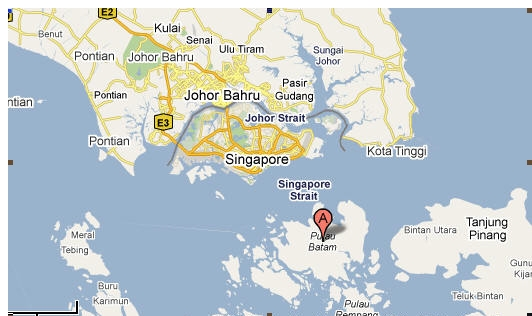

Investment in Batam
Summary
Batam together with its surrounding small islands can be a place to invest. It is a very good potential growth area. Its economy can be tied to that of Singapore.
Analysis
Geography
Batam is an island city of the Riau province of Indonesia. It is about 45 minutes of boat ride to or from Singapore. There are ferries to and from the cities of Dumai, Bintan, Pekanbaru and Medan in Sumatra.
Significance of geographical location: it is centrally located for recreation, shipping, ship repairs and international trade.
Singapore is an important market.ELECTRONICS: There are about four hundred companies, using mostly female labour employ over 200,000 workers.
FABRICATIORS/MANUFACTURER and OIL SERVICE: Following a downturn in 1999/2000, this sector is now expanding again. Larger fabricators/manufacturers in this sector include Nippon Steel, Mc Dermott, Keavrner, Vetco Gray, Citra Tubindo, Shlumberger, McConnel Dowell, Halliburton, Global Industries, Saipen, Ballast Nedham, Weatherford, and Hyundai. Over 700 foreign companies have manufacturing or logistics operations on the island..
SHIP REPAIR: Location and cheap labour ensure the business to continue to expand.
TOURISM: Over a million visitors a year, including those from Singapore that come for the day. Batam's main town of Nagoya has dozens of hotels and nightspots.
CONSTRUCTION SUPPORT: Many of the world's larger contractors have equipment logistics bases here including: Bechtel (U.S.A.), Hyundai (South Korea), Ballast Nedham (Nederland), McConnell Dowell (Australia), Global Industries (U.S.A.),, etc.
Growth:
The city has grown at 30% per year for each of the past 11 years. Growth in 2002/2003 was closer to 32% per year.
According to Batam Free Trade Zone Management Agency of Indonesia, total realized investment in Batam stood at US$14.1 billion in 2009; $14.59 billion in 2010; $14.74 billion in 2011; $15.69 billion in 2012, and $16.14 billion in 2013.
Security
Batam is a very safe area compared to the other regions of Indonesia.
In April of 2010, at the Labroy Marine's Shipyard *, is an isolated incident, where 5000 workers rioted and set fire to offices and cars. This incidence has been handled by the Indonesian government seriously to prevent future occurrence again.
Muhaimin, speaking after a meeting on the riot at the vice president’s
office, said it was “clearly apparent that the main factors are the
results of traditions and cultures.”
Home Affairs Minister Gamawan Fauzi called the incident “a lesson for
our future” and said he would send a letter being drafted on Friday to
regional governors, heads of districts and mayors to tell them to take
action over racial and cultural differences in the workplace, “so that
cases such as this one do not happen again.”
The letter would ask regional chiefs to be “quicker in monitoring
developments” on their turf. “We need to be responsive to what’s
happening in the regions,” Gamawan said. “A problem should not exist
for some time and suddenly erupt.”
House Speaker Marzuki Alie called for a government inquiry into the
riot and a review of outsourcing practices.
“There are many problems, such as discrimination. I think unclear
regulations over outsourcing have become one of the main factors. Many
employees working at the dock are contract workers,” he said.
Fish commerce of Singapore
In 2009:
Fish (in Tonnes)
local production of Singapore： 5,689
Imports: 154,602
Exports: 40,386
Fish Auction: 65,332
Free trade zone
Singapore's consumption of fish is estimated to be 100,000 tonnes per year of which about 5% is accounted for by local food fish aquaculture. This is mainly from coastal fish farms. They produce marine food fish species like groupers, seabass, snappers and milkfish as well as green mussels and crustacean (shrimp/mangrove crabs). There are also freshwater food fish farms producing snakeheads, tilapia, catfishes and carps and other cyprinids.[1]
Distribution Channels
Live, fresh, chilled and frozen fish and seafood products are obtained by local importers for distribution to retail and food service outlets throughout Singapore. Except for frozen products, most are air-freighted into the country. Some large supermarket chains and restaurants import directly.[2]
Significance: Most of the fish consumed in Singapore are imported. There is a very large potential market for fish..
SIJORI Growth Triangle
Batam is a free trade zone of the SIJORI Growth Triangle, a partnership arrangement between Singapore, Johor (of Malaysia), and Riau Islands (of Indonesia) that synergizes the infrastructure, capital, and know how of Singapore with the natural resources, land, and labor of Johor and Riau. Johor is the 3rd largest and most developed state of Malaysia and Riau is the faster economic expansion province of Indonesia. Batam is the faster growing city of the province of Riau and the richest city of Indonesia.
Significance of this factor: this area supplies the necessary factors for investment
Produce imports of Singapore
Currently Malaysia supplies about 20% of fresh produce of vegetables and fruit to Singapore. The supplies from Japan and Korea are getting more expensive because of higher labor cost. There is a potential for Batam to supply the demand because of lower labor cost of Batam.
The Agri – Food and Veterinary Authority of Singapore (AVA) and Food Control Department are the major governing bodies of Food trade. The exports to Singapore are primarily controlled through regulations imposed on the importers.The import of fresh fruits and vegetables is regulated under the Control of Plants Act. It stipulates that the produce should not contain any prohibited pesticide, and the levels of pesticide residue or toxic chemical residue should not exceed the prescribed levels.
Significance: together with the awareness of organic produce by the consumers and strict regulation of Singapore government, it provides good opportunity to grow and export organic produce for export to Singapore.
Agriculture in Batam
“ I am very impressed with the place of the existing cultivation of vegetable crops in Sei Temiang, Batam. With the poor soil conditions such as nutrients in Batam is, in fact cultivation can still be done and the results are also quite good," said Dr. Ahmad Dimyati to a number of reporters at the scene of horticultural garden. [1]
While in Batam, master botanist Chua Boon Wah M.Sc, tested the water. It showed a low pH. One sample of water showed a pH of 4.7. Some samples of soil and water were collect. A brief excavation showed that the top soil with organic matter was shallow. These preliminary findings match the information of the Agriculture Department. Low pH soils can be adjusted to appropriate levels, while more difficult to effectively alter high pH soils. Many plants are suitable for low pH soils, like azaleas.
Population
There are more than a million people estimated in June of 2010 including a sizable ethnic Chinese (about 14%). Beside Indonesian, Malay dialects, Chinese dialects of Fujian, Chowzhou and Mandarin are also spoken there.
Despite negative reports in the foreign media, Batam is actually a safe place for the 1.2 million foreign visitors who come each year.
Tourism
he total number of tourist visits to Batam in 2008 reached more than
1.45 million, averaging more than 120,000 each month or 4,000 tourist
visits every day; making Batam the second busiest area for tourism in
Indonesia, after Bali.
There are 5,600 hotel rooms, 60% which are star-rated hotels and beach
resorts. Six international standard golf courses and two marinas are
among the favorite weekend activities for visitors
Tourism related investment makes up about 16% of the total private investment in Batam amounting to US$ 800 million. The government, assisted by the Batam Tourism Promotion Board, puts a continuous effort to promote the industry in Batam by organizing social and international cultural and sporting events.
Because of low cost and proximate to Singapore, it attracts many Singaporeans to spend their vacation here.
Housing
The rules for property ownership by foreign nationals in Batam fall under Decree No 068/KPTS/KA/III/1999. This regulations states that foreign nationals or companies are permitted to 100% own residential or commercial property in the Barelang area (Batam, Rempang and Galang). The only properties excluded from this decree are low cost and very low cost housing, but includes all other types of building structures.
For many years Indonesia has decreed that land in Indonesia can only be owned by Indonesian citizens. Thus, if you want to buy a house (as a foreigner), this would have been legally impossible.
In the late 90s, new laws were enacted so that foreigners are now permitted to purchase apartments and office space in Indonesia if the building has a strata title status. This enables the foreigner to own the apartment or office space but not the land on which it stands.
Foreign Investment
Facilities offered to foreign investment in Batam are as follows:
Allowance to establish 100% foreign ownership
Streamlined procedure for foreign investment
Foreign investment license for 30 years and extendable
Simple immigration procedure for expatriates
Land lease up to 80 years and extendable
Easy import and export procedure
*Labroy Marine’s shipyard, is managed by Singapore-based Drydocks World SE Asia, a Dubai-owned firm.
Company Overview
Labroy Marine Limited, together with its subsidiaries engages in marine construction and engineering in Singapore. The company’s services include shipbuilding, repair, offshore rig construction, and shipping. It owns vessels and also operates shipyards. Through its vessels, the company offers marine logistics. Its fleet contains tankers, container vessels, offshore supply utilities vessels, tugboats, drill stem testing barge, crude and fuel oil barges, dredgers, hopper barges, water barges, and flat top cargo barges. The company offers spot, bareboat, time and voyage charter, as well as contract of affreightment forms of charter arrangement. Labroy Marine serves customers from the coal, oil and gas, offshore construction, timber, and building materials industries. The company was founded 1978 and is based in Singapore. As of January 4, 2008, Labroy Marine Limited operates as a subsidiary of Dubai Drydocks World, LLC.
*Source of Labroy Marine's Shipyard: http://investing.businessweek.com/businessweek/research/stocks/private/snapshot.asp?privcapId=4481924
[1]http://www.ava.gov.sg/AgricultureFisheriesSector/FarmingInSingapore/Aquaculture/
[2]http://www.ava.gov.sg/AgricultureFisheriesSector/FarmingInSingapore/Aquaculture/
Google map of Batam in relative to Singapore:

http://riau.litbang.deptan.go.id/eng/index.php/berita-mainmenu-26/13-info-aktual/433-batam-is-show-window-of-indonesia-horticulture-to-the-international-world